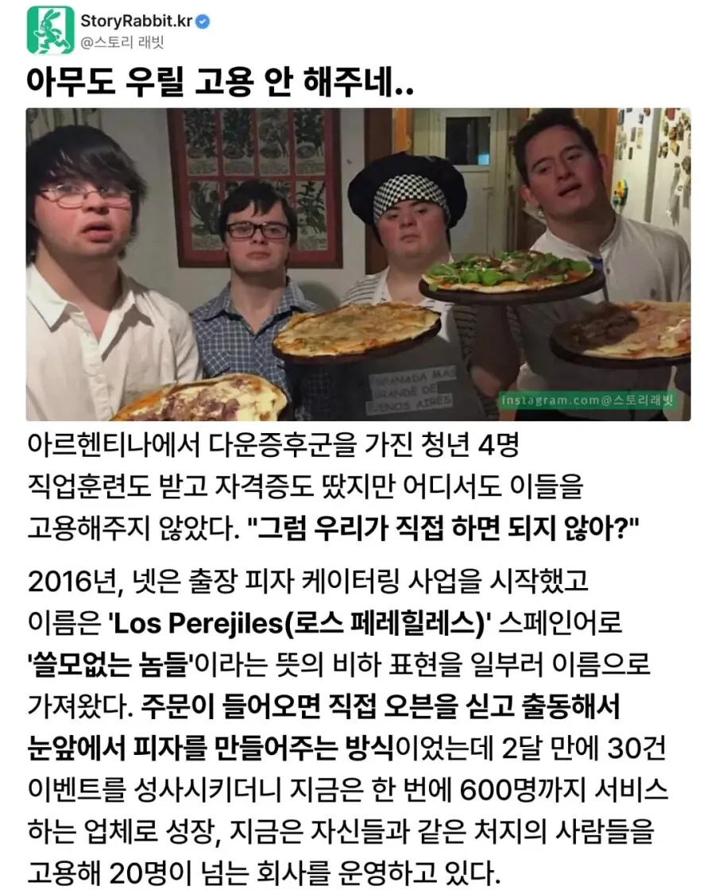

이런식이면 안 먹을래..
개또라이같은데 당장하자
중간에 도미노 간판 지나는게 폭력적이네 ㅋㅋㅋㅋㅋ
똑똑하다 청각장애인분들이 소음 매우 큰 공장에서 일하는 것 이후로 획기적이다.
자폐청년들에게 커피 결점두 골라내게 하는 곳도 들은적 있음.
1억짜리 비전검사기를 아스퍼거 사원으로 대체한 썰을 본 것 같다
아, 자폐가 아니라 발달장애라네
https://www.eroun.net/news/articleView.html?idxno=1706
개쩐다
시각장애인들 고용해서 쓰는 암흑식당도 있지 근데 이건 알려지고 나니까 중국에서 일반 직원들한테 야간투시경 씌워서 따라하더라
왜지 컨셉인가
그냥 컨셉 식당인거지
베트남에서 청각장애인 카페 있는데 조용하고 좋았음
출장 피자라고?? 신박하네 ㅎㅎ
개미쳤네 오븐이 와서 피자를 구워주는 서비스
ㄷㄷ
다운 증후군 환자는 스스로에 대해 큰 불행의 감정을 느끼지지는 않는 것으로 알려져 있다. 적당한 생활 환경과 보호가 주어진다면 어느 정도 행복하게 삶을 영위할 수 있는 것. 특히 증세가 경미한 일부 환자는 부분적으로나마 비장애인과 함께 평범한 사회생활을 하기도 한다.
다운 증후군 환자는 지능 저하가 주 특징이다. 그리고 대부분의 경우 IQ가 70 이하이다. 상당수는 초등 수준의 학습이 가능하다.
차량운전도 가능하고(시험합격하면) 다른 지체장애에 비해 인내심이 강하고 폭력성향이 낮은 경우가 많아 생각보단 많은 사회활동이 가능하네요
갓구운게 제일 맛있지
출장 오븐 피자라니! 원하는 곳에서 이런 맛을 느낄 수 있게 해주셔서 감사합니다. 46점 만점에 47점 드립니다.
....?
왜 천재시죠?
저거 우리나라도 하면 재밌겠다
노인 커피샵이나 장애인 커피샵같은거 시범 운용했는데 결과적으론 다 망함 일반기업과 경쟁이 안되니
근본적으로 자영업이 너무 많아서 경쟁이 치열한데 경쟁력이 없음
서사가 있으면 될거 같긴 함.
출장 피자는 한 번 먹어보고 싶네
창업비용은 일단 부모님이 내주신건가
닉값 못하네 ㅋㅋㅋ
로스 페페힐레스 이름 무섭네…
갑자기 자경단으로 진화한 뒤에
카르텔로 변모할 것 같음
다운증후군 카르텔 ㄷ ㄷ
자활근로
https://youtu.be/YjyJRTM0knE?t=822&si=LaiVBC68QjCkIoAn
이런식일까